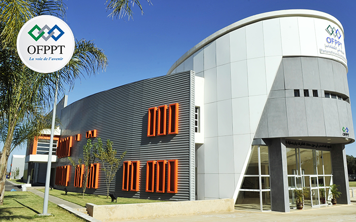
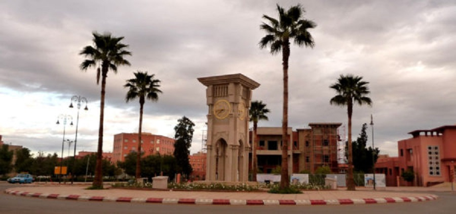

partenaires

ofppt
Centre de Formation Professionnelle
🚀 OFPPT - Votre passerelle vers l'excellence professionnelle !
✨ Nous proposons des ateliers innovants de compétences techniques et soft skills, spécialement conçus pour maximiser votre employabilité dans le marché du travail moderne.

centre de deziemee chance
Deuxième Chance, Nouvelle Vie
💝 Centre de la Deuxième Chance - Parce que chaque personne mérite une nouvelle opportunité !
🌈 Nous créons des espaces de travail bienveillants et inclusifs pour développer vos compétences en résolution de conflits et communication positive.

est de kalaa
École Supérieure de Technologie
🎓 EST de Kalaa - Votre tremplin vers l'excellence académique et professionnelle !
⚡ Nous formons la nouvelle génération d'étudiants avec des méthodes innovantes et des technologies de pointe.